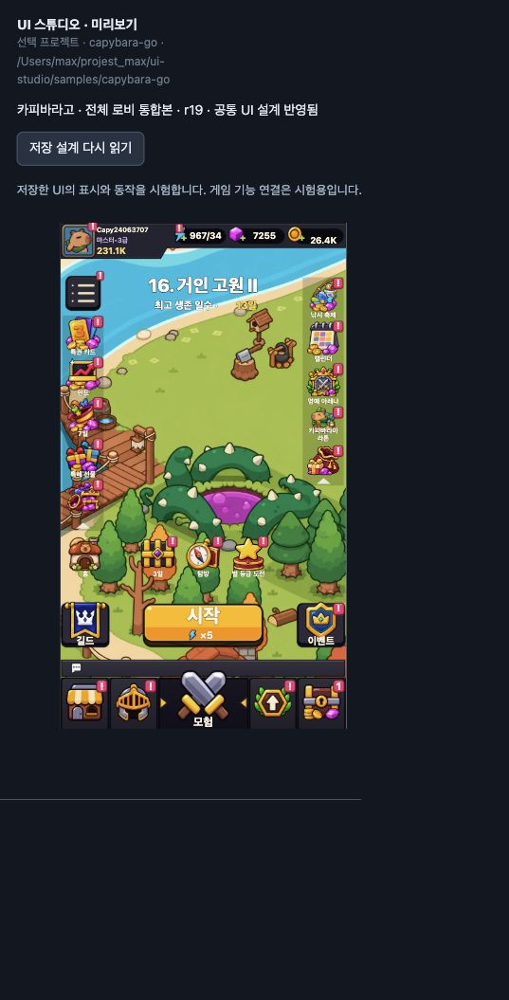
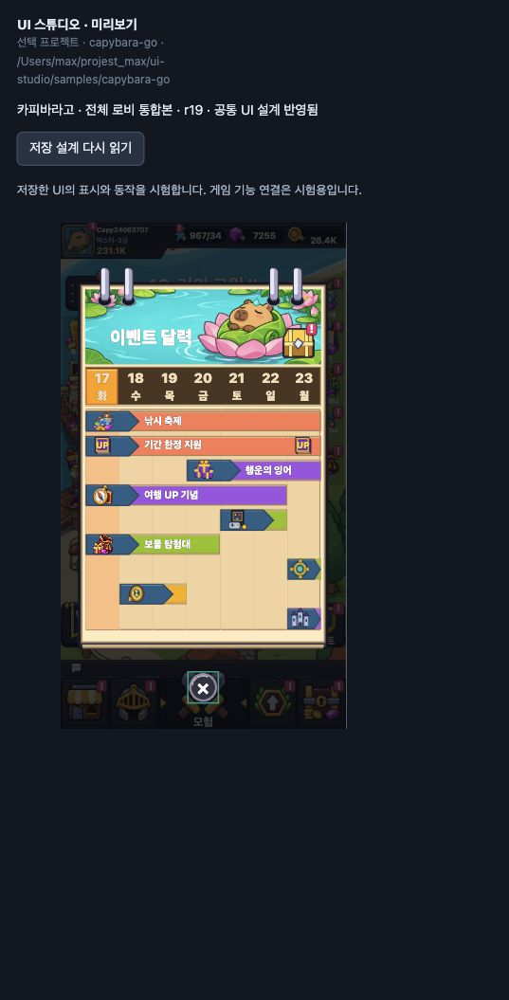
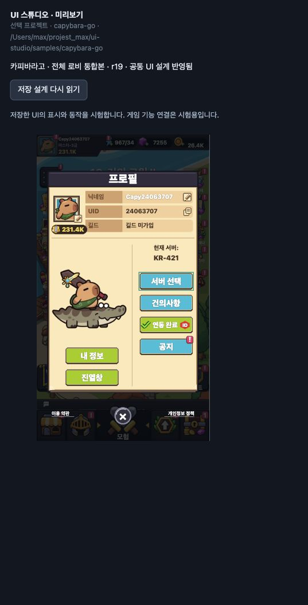
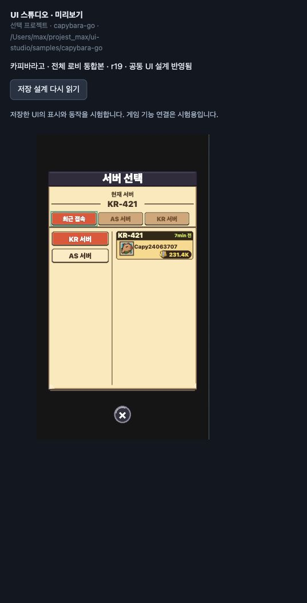
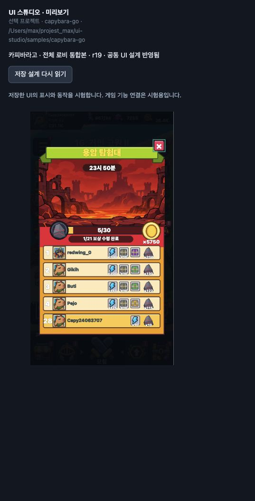
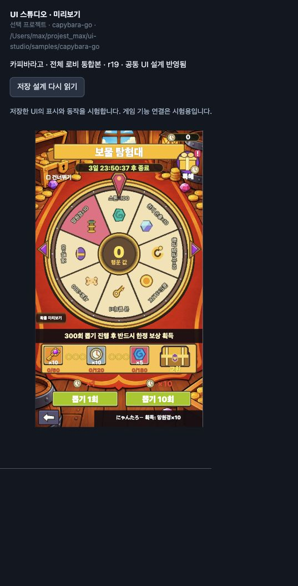
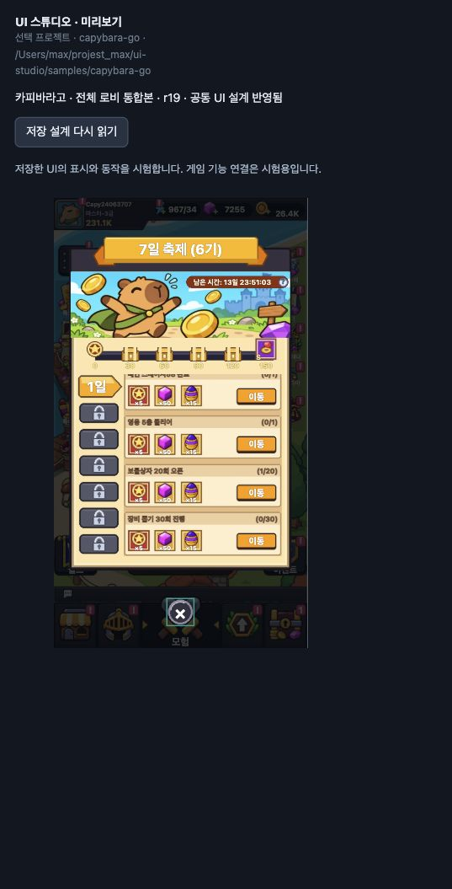

카피바라고 · 전체 로비 통합본
r20 · 23화면 · 2,067부품 · 114연결 · 1.44MB / 제안(검수 대기)
전체 로비 통합 미리보기 열기 · 영상 조사서로 돌아가기

로비
달력
프로필
서버선택
용암
보물탐험대
7일축제# 카피바라고 전체 로비 통합·저장 가이드
codex(단이·2차) · 2026-11-18 09:02 KST · 제안(검수 대기)
현중: “로비는 작업 된게 이상한데 상태좀 다시 봐” → “일단 작업 마무리 부터 하고”. 7007은 보류하고 기존 전체 로비와 대표5종을 합쳤습니다. 새48.890초 영상 분석은 별도 에이전트의 후속 업무입니다.
## 열어야 하는 저장본
**카피바라고 · 전체 로비 통합본 / ux-gjs-4e64eb72 r20**
- 23 native화면 · 2,067부품 · 114연결 · 저장1,436,672B.
- 정식 내보내기1,436,671B, 공식 readDesignFile 통과·저장값 동일.
- workspace-ac9e2a9e-65c0-4fe8-b67a-79a5a9ae42d7.
- 미리보기: http://127.0.0.1:7018/ui-studio/preview.html?project=ux-gjs-4e64eb72&workspace=workspace-ac9e2a9e-65c0-4fe8-b67a-79a5a9ae42d7
- 기존 r333/r47을 지우지 않았습니다. 고유5종 별도본은 원복한 동일 내용 r84이며 이전r83 백업도 보존합니다. 간단 진입22부품 문서를 완성 로비로 열지 않습니다. 전역 current-review는1차 소유라 바꾸지 않았습니다.
## 실제 연결
|입구|도착·복귀|
|---|---|
|로비 달력|달력 → 닫기/Enter/Escape → 로비 달력 초점|
|로비 프로필|프로필 → 서버 선택 → 닫기 → 프로필 → 닫기 → 로비 프로필 초점|
|로비 우측 펼침|이벤트 행 → 용암 → 닫기 → 이벤트 행 / 보물 탐험대 → 뒤로 → 로비|
|로비 7일|7일 축제103부품·과제4행 → 닫기 → 로비7일 초점|
|기존 하단 메뉴|상점/장비/특성/보물상자와 모험의 기존 연결 보존|
C18_01_064.50s를 다시 보고 펼침 상태를 연결했습니다. 유사 프레임 제작 제외와 연결 상태 생략을 구분합니다. 여행UP/추가상품 후속 화면을 임의 대체 연결하지 않았습니다. 게임 시작·결제·계정·서버 전환·추첨/랭킹 결과는 만들지 않습니다.
## 다음 AI의 통합 순서와 실수 방지
1. 원본·workspace/project/revision·내보내기를 보존합니다. 전체 로비를 native 사본 저장으로 복제하고 실제 새 projectId를 확인합니다. 사본 저장 뒤 상세 편집 링크가 옛 ID일 수 있습니다.
2. 같은 상세 탭에서 원본 화면 전체 선택→복사→대상 문서 선택→동일504×894 새 화면→팝업 종류→붙여넣기 순서입니다. clipboard는 탭 메모리입니다. 화면 설정/presentation은 복사되지 않아 별도 확인합니다.
3. 외부 targetScreen이 새 문서에 없으면 그대로 붙이지 않습니다. 프로필 서버 연결을 잠시 제외해 복사하고 Undo 원복했습니다. Undo 뒤 dirty와 실제 내용 변경은 다릅니다. 동일 내용 재저장이r83→r84이며 파일 대조로 내용 변경0을 확인했습니다. 대상 문서에서 서버 연결을 다시 지정합니다.
4. 복사 루트의2% 이동/앵커 평탄화를 native 수치로 복원합니다. 룰렛47루트 포함5화면의 부모 트리·텍스트·그림 참조·루트 사각형을 저장파일로 대조했습니다.
5. 단일/그룹 복제는 부모가 최상위로 바뀔 수 있습니다. 부모부터 재지정하고 상대 크기를 넣습니다. 7일 축제 보석/알6부품+다른 과제3행45부품을 native 복구해52→103으로 맞췄습니다. 오래된 Move 이름/표시alt 일부는 후속 정리 대상입니다.
6. 이미지 재사용 목록이 한 줄이면 등록 실패로 단정하지 않습니다. ‘이미지 목록 새로 읽기’ 후 예상SHA 옵션을 확인합니다.
7. 정식 저장과 내보내기 모두 compact로2,000,000B 한도를 유지합니다. 내보내기만 pretty라 재가져오기 한도를 넘는 문제를1차가 정식export 분기만 보완했습니다. 외부JSON 재작성/한도상향/숨은모델 주입은 하지 않았습니다. 이동할 때 assets도 보존합니다.
8. 로비 입구→화면→닫기/복귀/초점,1440/430·native390·그림/넘침·공통치수·정식 저장 재열기를 검사합니다. 소스 문자열 검사와 실제 화면 확인을 구분합니다.
## 실제 검수와 한계
기존16화면은r333와 동일합니다. C11은52+복구51=103입니다. 5화면 각각부품/부모/텍스트/그림/루트치수 대조 통과. 자원322개 SHA 일치·개별300KB이하(최대174,920B).
CSS1440×900/430×843 대표화면의 안정상태 이미지 대기·실패0/가로넘침0을 확인했습니다. WheelBack 직후 대기45는 일시 로딩 기록이며 후속 안정상태0과 구분합니다. Enter/Space/Escape·서버 ShiftTab·팝업 초점 복귀를 확인했습니다. 페이지 Back 초점복원까지 완료라고 하지 않습니다.
7일 마지막 과제 버튼 native클릭으로 스크롤0→16.25·마지막행 접근을 확인했습니다. 자동화wheel/PageDown은 이동하지 않아 성공으로 기록하지 않습니다. 시작 버튼 Space3초에서 앞면Y661.2735→663.7206→661.2735(CSSpx)를 확인했습니다.430에서 상점 선택 시 상점확대/모험기본, 모험 선택 시 반대로 복원됐습니다.
native390: 달력/프로필/서버 판넬443.998×650.020·Close51.994², 용암443.998×620.019·Close40.001², 룰렛463.999²·뽑기200.006×50.002·뒤로63.986×47.990,7일 판넬443.998×642.012.
이번은 로비 연결과 저장 통합 마무리입니다. 원본 서체·작은 그림 재질/펼침 아이콘 정확성·전체 시각 동등/실게임 구현을 완료로 자칭하지 않습니다. 소소한 보정은 후순위입니다.7007 적용은 보류했고 새 영상 추가 화면은 후속 제작합니다.
근거: _작업/codex/lobby-integration01의 verification.json/merge-ui-qa.json/merge-native390.json. 백업 /Users/max/projest_max/ui-studio/docs/planning/_backup/20261118_단이/090111_lobby_integration_guides. 커밋없음/서버재시작·새예약0/원본게임소스무변경.